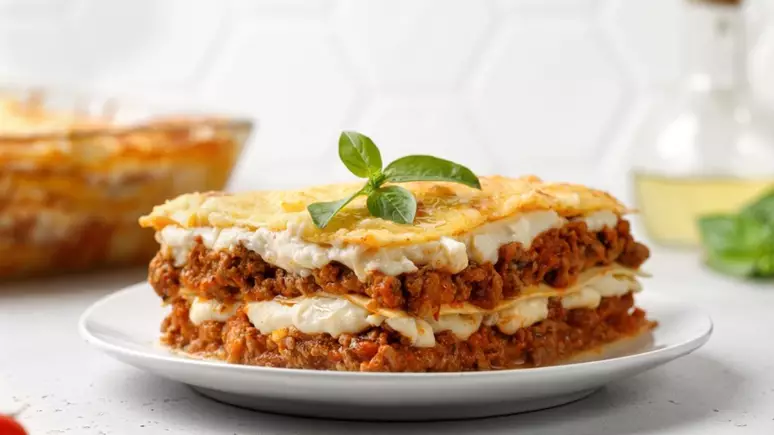

Lasanha

Fonte: Guia da Cozinha
Descrição
A Lasanha à Bolonhesa é um prato clássico da culinária italiana, conhecido por sua combinação irresistível de massa delicada intercalada com camadas de molho bolonhesa rico e queijo derretido. Preparada com carne moída suculenta, molho de tomate encorpado e uma seleção de queijos gratinados, esta lasanha oferece uma explosão de sabores que agrada a todos os paladares. Ideal para refeições em família, eventos especiais ou até mesmo para um jantar reconfortante, a Lasanha à Bolonhesa é uma escolha clássica e reconfortante que certamente satisfará os amantes da boa comida italiana.
Ingredientes:
- 1 rolo de massa de pastel (500g)
- 300g de queijo mussarela fatiado
- 300g de presunto fatiado
- 100g de queijo parmesão ralado
- 2 latas de milho com a água
- 3 xícaras (chá) de leite
- 1 xícara (chá) de requeijão
- 1 cubo de caldo de legumes
- 2 colheres (sopa) de manteiga
- 1 cebola picada
- 1 peito de frango cozido e desfiado
- 1/2 xícara (chá) de cheiro-verde picado
- Sal e pimenta-do-reino a gosto
Modo de preparo:
- Para o molho, bata o milho, o leite, o requeijão e o caldo de legumes no liquidificador até triturar e ficar homogêneo.
- Aqueça uma panela com a manteiga, em fogo médio e frite a cebola, o frango e o cheiro-verde por 3 minutos.
- Adicione o creme do liquidificador, tempere com sal e pimenta a gosto e cozinhe por 5 minutos.
- Desligue e deixe amornar.
- Para a montagem, em um refratário médio, faça uma camada de molho, uma de massa de pastel, de molho novamente e de mussarela e presunto.
- Repita as camadas, até acabarem os ingredientes, terminando em molho.
- Polvilhe com o parmesão e leve ao forno médio, preaquecido, por 25 minutos ou até gratinar.
- Retire e sirva.